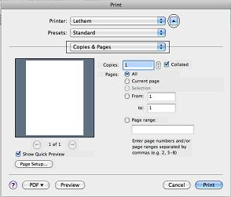
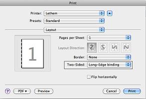
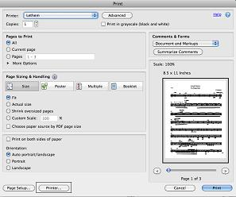

Printing Information / Double-Sided Printing
Mac Instructions
Word
Click Print, among the options listed in the File drop down menu.
If the arrow next to the printer name is pointed down, click it once. (See image)
Click the drop-down arrows next to Copies & Pages.

Choose Layout. (See image below)
Change Two-Sided: to Long-Edge Binding.

Click Print.
Adobe
Click Print, among the options listed in the File drop down menu.
Click Printer... at the bottom of the menu. (See image)

If the arrow next to the printer name is pointed down, click it once. (See image below)
Click the drop-down arrows next to Copies & Pages.
Choose Layout. (See image below)
Change Two-Sided: to Long-Edge Binding.
Click Print.
Windows Instructions
Click File, located in the toolbar of the document program.
Click Print, among the options listed in the File drop down menu.
Click Properties.
Click Finishing.
Click Choose Double-sided
Click Print.